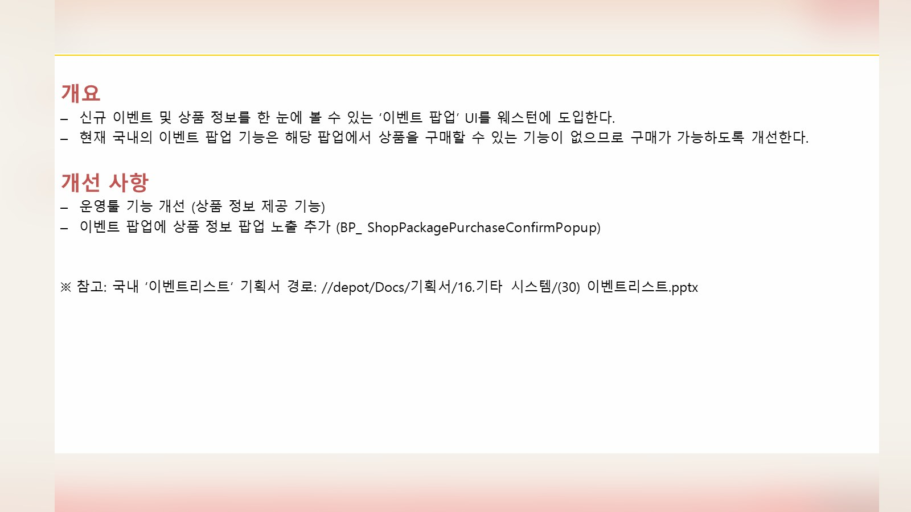
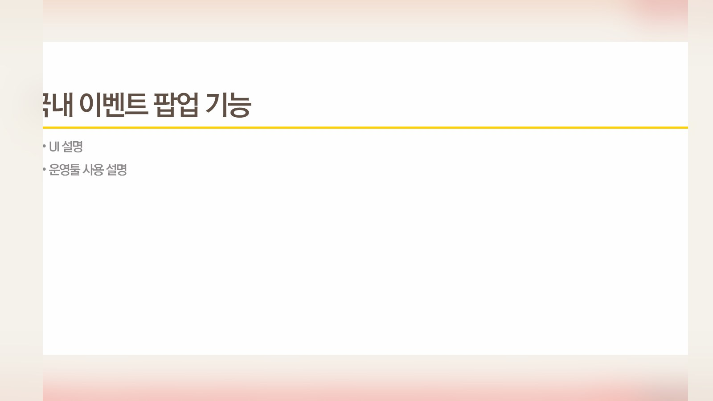
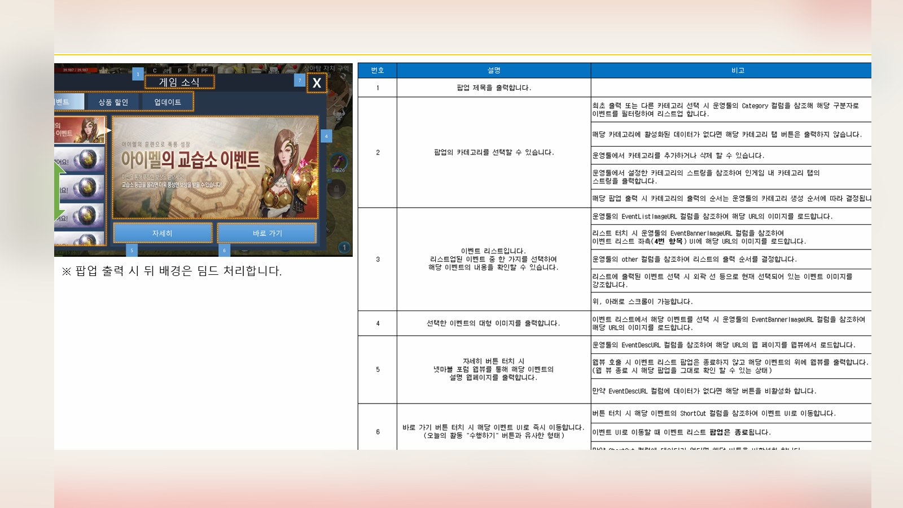
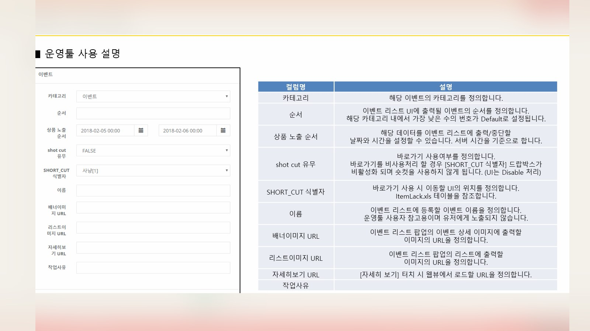
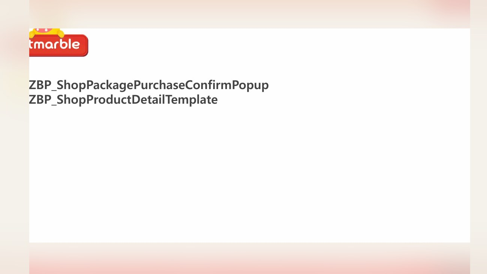
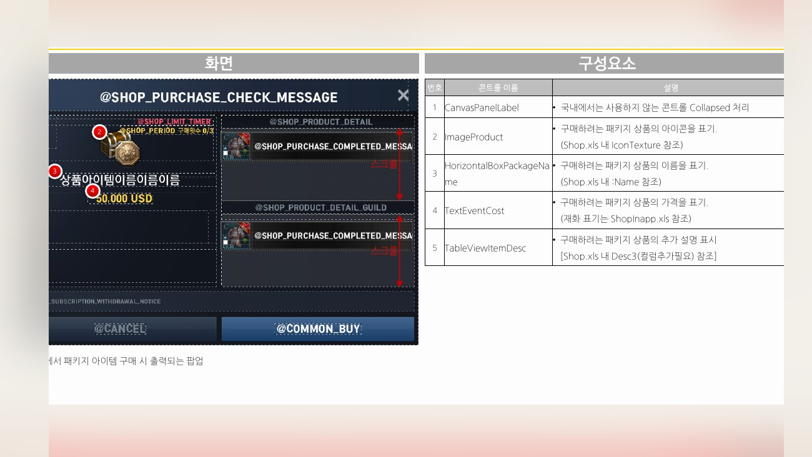
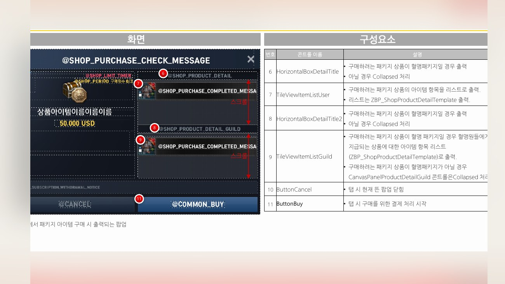
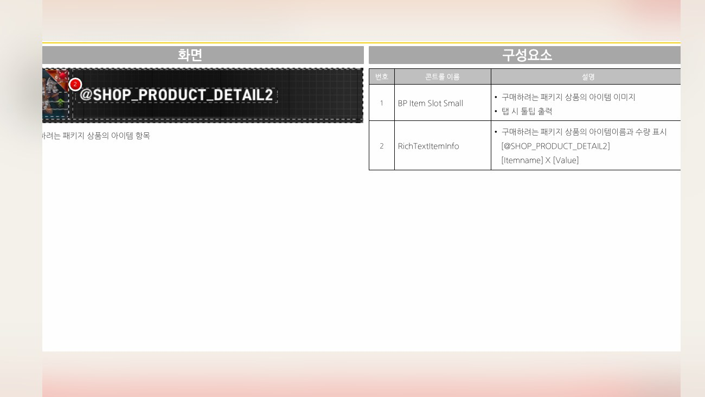

Planning Context
어떤 기획이었나
- 지역 서비스에서는 국내 기준 UI를 그대로 적용하기 어려운 상품 구조, 이벤트 표현, 서버 목록, 번역 길이 문제가 발생합니다.
- 상점/패키지/이벤트 팝업은 운영과 결제, 문구, 이미지 리소스가 함께 맞아야 하므로 검토 범위가 넓습니다.
L2R · Regional UX
웨스턴 서비스에서 이벤트 팝업, 몬스터 소환석, 상점/패키지 등 지역 서비스에 맞춘 UX 개선을 정리한 사례입니다.

Planning Context
Process
Deliverables
Result
웨스턴 서비스 운영 조건과 UI 표현 차이를 반영해 지역 서비스 UX 개선 산출물을 정리했습니다.
Deliverable Captures
원본 문서는 포함하지 않고, 포트폴리오 확인용으로 일부 페이지만 이미지화했습니다. 슬라이드 마스터/상하단 영역은 흐림 처리했습니다.







